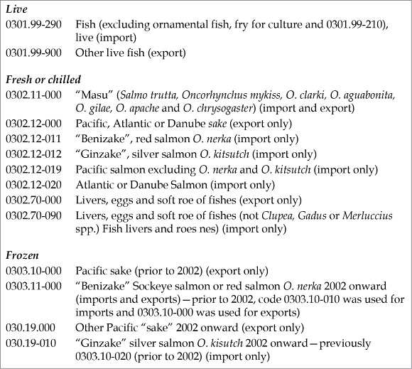

📖 ASCM Definition — risk register:
The process of risk identification and documentation must be comprehensive but still focus on critical risks. We will discuss a number of common and emerging supply chain risks.
Risk in a supply chain can take many forms, and supply chain risk managers need to take a systemwide perspective on risk. Risk managers determine risks to the supply chain using a number of analytical tools. For each risk identified, they define certain parameters for each risk in a risk register.
While a large number of risks may be identified in the first pass, risk identification is iterative, meaning that new rounds of identification need to occur. During these rounds, some known risks might become better understood and new risks might be identified.
A number of tools might be used to identify risks, including the following:
Documentation and assumptions reviews: Reviewing preconfigured supply chain risk management software checklists and dashboards (some of which are industry-specific), supply chain documents, existing analytical tools, variance analyses, and the like can reveal risks. Reviewing assumptions made about a process or project can help determine if these assumptions seem valid to a consensus of stakeholders, and the team can also consider what might happen if the assumptions turn out to be wrong.
Brainstorming: Brainstorming is a group meeting where a wide range of experts are gathered to discuss risks. A facilitator sets down some rules in advance, such as that all ideas are welcome and none are criticized. If risk categories exist, they can be used to promote completeness. Brainstorming can also be done remotely as a distributed survey.
Delphi technique: Anonymous questionnaires are collected and compiled in multiple rounds until the group reaches consensus.
Interviews: Formally or informally talking to experts and stakeholders can reveal new perspectives on risk.
Root cause analysis: Searching for the underlying causes of a risk can help focus on the actual problem rather than the symptoms.
Risk checklists: Since risk analysis has been conducted in the past at the organization, and at other organizations, a list of risks from other processes or projects can be reviewed to see what applies.
Risk diagramming: Flowcharts or other relationship diagrams can be used to show a process. Analysis of such charts can reveal weaknesses. Also, various tools from the quality discipline such as a cause-and-effect or Ishikawa diagram can be leveraged for risk analysis.
SWOT analysis: A strengths, weaknesses, opportunities, and threats analysis starts by looking at the organization's capabilities and areas that need work and then looks at external opportunities and threats. This strategic-level analysis is good at seeing the big picture—in other words, what opportunities or strengths might offset threats or vice versa.
One starting point for supply chain managers may be to list each raw material used, identify which materials are of strategic value, and invest time in understanding the organizational and financial structures of each strategic material supplier. This process can help with defining the relative vulnerabilities of the supply chain and the implications of doing nothing.
Risks need to be described in a consistent manner and at a level of detail that will allow them to be understood and evaluated against one another. When identifying risks, specify
Cause(s): The root causes, if applicable and known.
Event(s): The triggering events, if applicable and known.
Impact: The internal and external threats (or opportunities) for each critical asset or process. This includes an assessment of criticality. For threats, this is the critical assets or processes of the organization that, if not operating effectively, would prohibit the company from fulfilling its mission, such as providing its key products or services.
Effect: Areas within the organization or up and down the supply chain that would be impacted as a result.
The final task is to combine these into a definitive statement of each risk. For a company that ships most of its products by train, an example might be
Derailment of multiple cars due to sabotage or disrepair of train tracks resulting in destruction of products onboard, possible injuries to train personnel, and delays of future shipments while track is repaired.
An automotive original equipment manufacturer that produces gas supply lines using a patented raw material from a single source might identify the risk as follows:
Nylon-12 is available from only one supplier, Corporation ABC, and is produced in just one plant in Germany. A disruption or accident at this plant could critically disrupt the supply of this raw material for product lines A and B.
The scope and time frame of each risk must be well understood before organizations can decide what would be an appropriate response. The APICS Supply Chain Council notes that each identified risk must also have a time dimension or a specific time horizon (e.g., day, month, year) and a specific perspective or view that defines the scope (e.g., boundaries, what is not included). Some risks will exist for only a given time period, such as risks of warranty returns in the warranty return period. Other types of risk are ongoing but can be defined further. For example, risks of delivery truck hijacking could be subdivided into risks as cargo is transported through specific countries or at particular times of the day. Risks of piracy (and resulting insurance costs) for containerships is defined by the countries that the trade routes pass by.
As defined in the ASCM Supply Chain Dictionary, a risk register is a useful summary report
on qualitative risk analysis, quantitative risk analysis, and risk response planning. The register contains all identified risks and associated details.
A risk register is often a spreadsheet with a row for each risk and a column for each risk attribute. More attributes can be added whenever they are desired. The register contains the risk identification information and risk definition information, along with all other information related to that risk. Since much of this information is determined during later steps in the risk management process, these fields would remain blank until those steps are completed. This can include a list of potential responses or references to planned responses. Exhibit 7-5 shows an example of a risk register.

Supply Chain Risks
Supply chain risks include the risk of loss of tangible assets (property, inventory, or money) or intangible assets (intellectual property, reputation). These losses can occur from internal or external threats. Internal threats include employee theft, collusion (working with a person or group outside the organization), fraud, misplacement, damage or destruction from accidents, or improper handling. External threats include theft by unknown parties or by external business partners, abduction, hijacking of modes of transportation and their cargoes, counterfeiting, computer hacking (e.g., ransomware), government appropriation, or damage or destruction from a host of threats.
Loss of goods, losses from other forms of malfeasance, and losses from lawsuits are discussed next.
Keeping domestic and import/export shipments secure from loss, damage, theft, and vandalism has always been a concern for businesses. The growing threat of terrorism has added a new sense of urgency to these long-standing security worries.
Who bears the risk of loss during transfer of goods is not ruled by who currently holds the title to those goods. International Commercial Terms 2020 (Incoterms® 2020), outline that the risk of loss or damage to the goods, as well as the obligation to bear the costs relating to the goods, passes from the seller to the buyer when the seller has fulfilled his or her obligation to deliver the goods. For example, in an FOB (free on board) transaction in which the terms of sale identify where title passes to the buyer, as soon as the goods are "on board" the main vessel the risk of loss transfers to the buyer or importer. The buyer must pay for all transportation and insurance costs from that point and must clear customs in the country of import.
In North America, two FOB terms (very often shown as F.O.B. and followed by Origin or Destination, and meaning either free on board or freight on board) are used (not to be confused with the FOB Incoterm® for sea and inland waterways) for domestic shipping via various modes of transport. The U.S. Uniform Commercial Code (UCC), Section 2-509, states that the risk of loss in a FOB Origin contract passes to the buyer when the inventory is duly delivered to the carrier. The risk of loss in a FOB Destination contract (where the seller is responsible for the goods until the buyer takes possession) passes to the buyer only when the goods reach the destination point. However, parties are free to allocate the risk of loss in any way the two parties can agree upon.
Organizations can face significant losses from various other types of malfeasance (wrongdoing), including bribery, fraud, corruption, abduction, and counterfeiting. (The last item is a type of intellectual property theft, so it is discussed later). Losses can take the form of money paid out or lost, fines, enforced shutdowns of operations, and seizure of goods. Illegal activities—even without the knowledge or consent of the organization's leaders—place a great risk on the organization's reputation. In the case of bribery, fraud, or corruption, the negative press from government or criminal investigations can cause loss of sales.
Fraud and corruption. Fraud and corruption can take many forms. For a supply chain, it often has to do with attempting to make an unfair profit by avoiding laws and regulations. In an example of risks related to fraud and corruption, a U.S. honey importer was caught passing off Chinese honey as honey from other sources. The organization's incentive was to avoid the large tariffs that could triple the cost of the honey, so two executives produced fake documents and subsidiaries shipped the honey to multiple countries, where it was relabeled and filtered to hide its origin. The organization fired the executives and paid a $2 million fine, had to destroy and replace the inventory, and then faced lawsuits from its competitors. It was eventually forced into bankruptcy when it went into default on a loan.
Bribery. A bribe is when a person gives another individual a gift, money, or a favor intending to influence his or her decision, judgment, or conduct. The bribe can be in the form of anything the recipient considers to be valuable. According to Bowersox, Closs, and Cooper, although bribes are unethical and illegal in most developed nations, these types of payments may be necessary in the sale and movement of product through customs in developing countries (although one's home country may still specifically prohibit the act).
An example of risks related to bribery involves a large clothing retailer. An Argentinian subsidiary admitted to bribing officials to get customs clearance for goods and to avoid inspections. The company was also accused of creating fake invoices to hide the payoffs. The company had to pay to the U.S. SEC a fine of $1.6 million, which was less than it could have been since the organization cooperated fully and there was no evidence the practice occurred in other subsidiaries.
There are three types of criminal bribery: commercial bribery, bribery of public officials, and bribery of foreign representatives.
Commercial bribes are usually aimed at covering up for an inferior product or obtaining new business or proprietary information. They can also involve industrial espionage, where sensitive information is stolen or kickbacks or payoffs are made for trade secrets or price schedules.
Any attempt to influence a public official in a manner that serves a private interest is considered a crime. The crime of bribery occurs when the bribe is offered even if the potential recipient does not accept it. Legally, a second separate crime occurs when a bribe has been accepted.
In 1977, the U.S. implemented the Foreign Corrupt Practices Act to discourage bribing of foreign officials in order to secure favorable business contracts. Since then, U.S. laws have been established that criminalize that bribery.
Abduction. According to an article by Anne Diebel, about $5.1 billion in ransoms are collected each year. Most of this is abduction of persons without kidnap and ransom (K&R) insurance. Over three-quarters of all Fortune 500 companies have K&R for their executives. (These premiums are worth between $250 to $300 million per year to insurance companies, but premiums have fallen by about half in the last decade.) Such insurance pays out about $500 million per year. About 90 percent of kidnappings are successfully resolved in the return of the victim, usually through payment of ransom. Use of professional negotiators raises this to a 97 percent success rate.
Abduction is primarily perpetrated on citizens of the countries where the abduction occurs. According to the Diebel article, foreigners make up only two to six percent of all kidnap victims. This is primarily an issue in countries that have high rates of kidnappings. The U.S. State Department maintains a four-level list of countries with abduction risk. Places like Afghanistan, Haiti, Iran, Iraq, Syria, and Venezuela are in the fourth and highest risk level (do not travel). Nigeria, Sudan, Turkey, and other places are in the third level (reconsider travel). Places including Colombia, Mexico, Russia, and the Ukraine are in the second level (exercise increased caution). Angola and Malaysia are in the first level (exercise normal precautions). However, kidnapping can occur anywhere. In 2010, the chairwoman of Columbia Sportswear was a victim of an attempted abduction while in her own U.S. home. Luckily for her, she knew how to respond and protect herself, and the criminal fled after she triggered a silent alarm that was sent to police.
Organizations also need to protect themselves from potential lawsuit losses.
Intangible assets include various types of intellectual property (IP), which can range from brands and marketing images to engineering designs or software code. Loss of IP is a serious risk to organizations since a competitor or government could use the information to steal market share or produce counterfeit items. Intellectual property rights (IPR) is an area where compliance is voluntary but so necessary to ongoing business that it calls for proactive efforts. Protecting IP may mean different things in different countries, so after discussing the overall risks of loss of IP, the subject is then discussed from the perspective of two types of countries: those with highly developed regulations and enforcement and those with large gaps in this area.
Intellectual property losses can include the threat of counterfeit goods or services using the organization's designs and patents and possibly the organization's name and brand (or a close approximation of them). Counterfeiting can reduce the organization's reputation for quality, or counterfeit goods could compete unfairly with the organization's products. Counterfeits can be actual goods, replacement parts, or copyrighted digitized materials. The counterfeiters can be operating for profit or be freely distributing the materials (in the case of digital property). Counterfeit goods are often introduced into a legitimate supply chain when a supplier faces a shortage. Rather than turning down the sale, the supplier turns to what are called "grey markets." These are markets selling goods that are legal but are produced by unknown third parties. Such goods become counterfeit when the supplier passes them off as its own manufacture.
Working with global suppliers creates intellectual property risk.
Working with global suppliers creates intellectual property risk. If global suppliers have access to proprietary designs and already perform the manufacturing, they could go into business for themselves and become a competitor. A way to mitigate this risk is to source materials that involve trade secrets either domestically or only in countries with robust trade secret protections. Another solution is to divide up parts of a trade secret and have different suppliers work on only a small portion of the overall requirements.
Protecting intellectual property in countries with highly developed regulations and enforcement can be straightforward. In many countries, IP is strictly enforced through laws and the court systems. In the U.S., for example, Article 1, Section 8, Clause 8, of the U.S. Constitution protects patents, copyrights, and trade secrets. Large damages can be assessed for violations, though the cost of and length of litigation can be high.
Patents need to be filed as quickly as possible to protect IP. However, it is imperative that a detailed patent search be performed as part of this process, with legal review. A risk is that organizations who own a prior and often more general patent can sue the organization for patent infringement. While any company owning a patent can do this, a special class of organization called a patent assertion entity (PAE), or "patent troll," has come to exist. According to a U.S. White House report titled "Patent Assertion and U.S. Innovation," PAEs "focus on aggressive litigation...asserting that their patents cover inventions not imagined at the time they were granted." These companies form shell companies to hide their identities and threaten or sue both large and small organizations. Protecting the organization from such lawsuits is especially needed in software-related patents because it can be difficult to separate the software's "function" from its "means" of creating the function. In addition to an exhaustive patent search, a clearly written patent can offer some protection. However, changes in patent law are needed to make this type of lawsuit no longer profitable.
Violations of IP in the U.S., including counterfeit goods, can be reported to a Department of Homeland Security task force, the National IP Rights Coordination Center. In the European Union, violations are reported to the official customs department of any member state.
Many countries have cultures, laws, and enforcement differences that make it very difficult to enforce IP rights. Just doing business in such countries creates risks. IP violations in many countries often must be enforced through civil litigation, with no guarantee of a fast or successful resolution.
Organizations often search for lower-cost suppliers, but the culture in many of the countries with such suppliers is more permissive of intellectual property theft, so organizations need to invest more time and money in protecting their trademarks and patents. In some cases, corporations or even governments of some countries engage in active corporate espionage, for example, stealing data from visitors' computers or other devices when they leave them in their hotel rooms.
An AMR Research study ranked China and India as problem countries related to IP infringement and other risks such as security breaches. China has demanded that some large companies provide their IP as the price of doing business there. Chinese law also stipulates that the first entity to use a trademark in that country owns that trademark, even if it is a trademark that is already registered in a different country. Therefore, it is imperative to file trademarks in China at the same time as in other countries even if the organization does not plan to do business there right away. Many countries require active use of a trademark in that country for the protection to be maintained.
Organizations need to review not only each country's patent, trademark, and copyright laws but also its product liability laws and relevant tax laws.
From a compliance perspective, it is important to get in-country representation and legal review to protect the organization's interests. Organizations need to review not only each country's patent, trademark, and copyright laws but also its product liability laws and relevant tax laws.
IP resources exist. In the U.S., the Patent Cooperation Treaty allows organizations to file an international patent application and seek patent protection in 115 countries with one application to the U.S. Patent and Trademark Office if the applicant has filed a foreign filing license. In another example, the U.S. and the European Union have partnered to provide a set of resources for small and mid-sized organizations to manage IP rights in foreign markets. They have developed the TransAtlantic IPR Portal, which includes toolkits for specific countries, information on how to manage IP rights, training, and links to enforcement authorities.